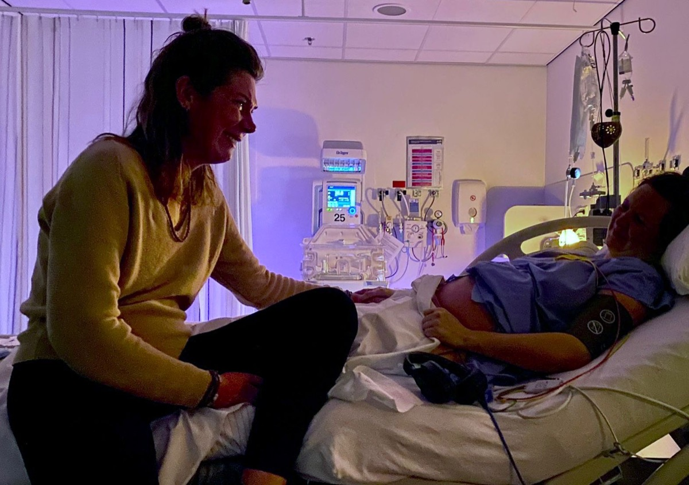
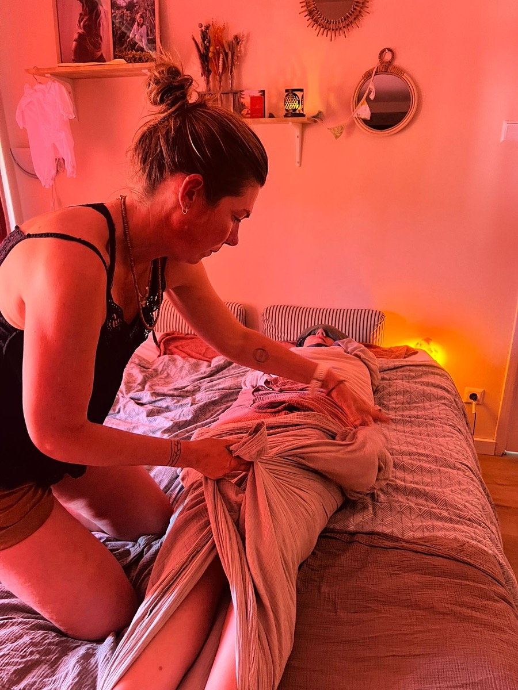
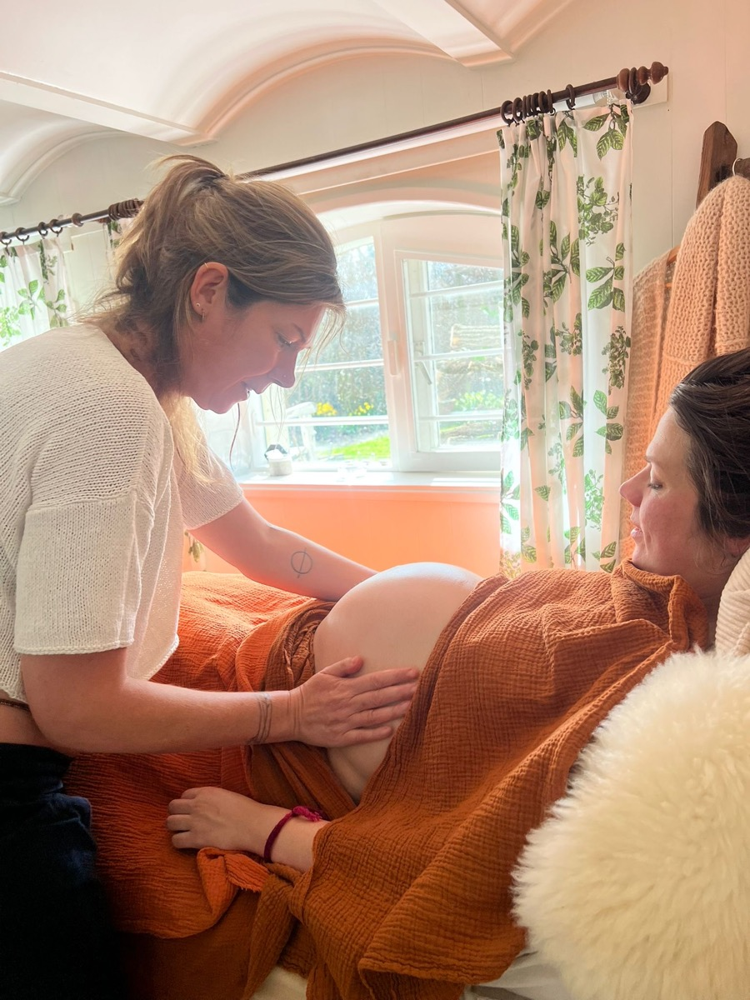
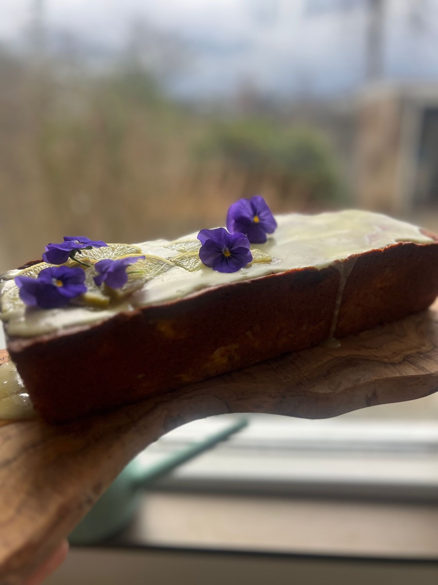
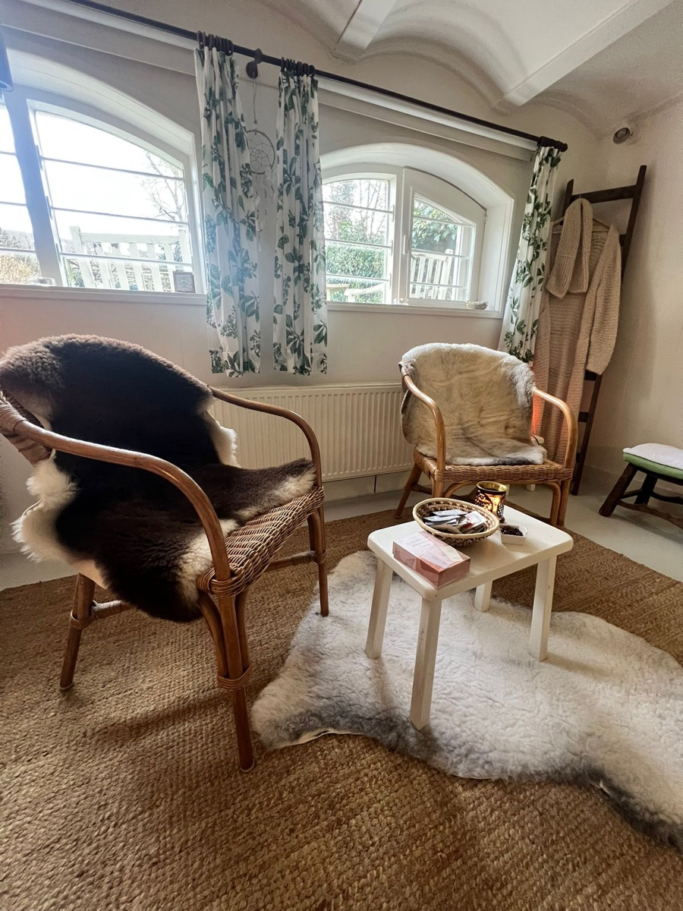

Wat ik voor jou kan betekenen
Het aanbod
Alles is afgestemd op wat jij en je gezin nodig hebben. Voel je vrij om te kiezen wat bij jullie past.

Geboorte doula
Een stuk samen oplopen
Soms voelt de aanstaande geboorte spannend, of verlang je naar meer persoonlijke begeleiding naast de reguliere zorg. Als doula loop ik een stuk met jullie mee, afgestemd op wat jullie nodig hebben.
- Een intake rond week 24 tot 28 bij jullie thuis
- Drie verdiepende sessies ter voorbereiding op de geboorte
- Samen vormgeven van jullie geboortewensen en kraamplan
- Continue bereikbaarheid voor vragen tijdens de zwangerschap
- Vanaf week 38 stand-by, 24/7 oproepbaar
- Aanwezigheid bij de geboorte, vanaf het moment dat jullie dat wensen
- Ondersteuning voor jou én je partner
- Indien er tijd en ruimte is probeer ik altijd een tijdlijn en wat foto's te maken
- Ik werk altijd met vaste back-ups

Kraamzorg
Een liefdevolle, rustige start
De eerste 40 dagen na de geboorte zijn waardevol maar ook kwetsbaar. Met aandacht voor jou als gezin zorg ik voor een liefdevolle en rustige start.
- Je hebt wettelijk recht op minimaal 24 en maximaal 80 uur kraamzorg
- Samen bepalen we hoeveel uur het beste bij jullie past
- Bij een eerste kindje raad ik minimaal 49 uur aan
- Tussen week 30 en 32 kom ik langs voor een intake
- Kraamzorg wordt vanuit de basisverzekering betaald. Check bij je verzekeraar of je aanvullend verzekerd bent.

Postpartum zorg
De eerste 40 dagen
Na de kraamweek neemt de aandacht van buitenaf vaak snel af, terwijl jouw herstel nog volop gaande is. Juist dan kan extra ondersteuning van grote waarde zijn.
- Emotionele ondersteuning en ruimte om je verhaal te delen
- Praktische hulp in huis
- Ondersteuning bij rust en herstel
- Aandacht voor voeding, verzorging en hechting
- Tijd en ruimte om te landen in het moederschap
Minimaal 12 uur. Geen vast programma, afgestemd op jouw situatie en behoeften.

Massage
Terugkomen in je lichaam
Zwangerschap en geboorte veranderen je, van binnen en van buiten. In de drukte van het zorgen voor een baby wordt het eigen lichaam vaak vergeten, terwijl juist daar zoveel aandacht en herstel nodig is.
Met zwangerschaps- en postpartum massages nodig ik je uit om te vertragen en weer thuis te komen in je lichaam. Een moment van rust, ontspanning en verzorging, waarin jij volledig centraal staat. Zodat je je gedragen voelt tijdens deze bijzondere overgang naar het moederschap.
€ 85 in de praktijk • € 100 aan huis

Postpartum maaltijden
Warme zorg op je bord
Goed eten is een van de mooiste vormen van zelfzorg in de kraamtijd. Vanuit zowel de ayurveda als moderne kennis over postpartum herstel weten we hoe belangrijk warme, voedzame en gemakkelijk verteerbare voeding is in de eerste weken na de geboorte.
Mijn postpartum maaltijden worden met aandacht en liefde bereid om jouw lichaam te ondersteunen tijdens het herstel. Denk aan verwarmende soepen, voedzame stoofgerechten, krachtige bouillons en herstelbevorderende snacks die energie geven en bijdragen aan rust en balans.
In een periode waarin bijna alle aandacht naar de baby gaat, biedt een warme maaltijd een moment om ook goed voor jezelf te zorgen. Voeding die ondersteunt, verwarmt en helpt om stap voor stap weer op krachten te komen.
€ 35 per maaltijd (voor 2 personen)

Privé geboortecursus
Helemaal afgestemd op jou
Een privé geboortecursus die niet standaard is. Tijdens een persoonlijke sessie van twee uur nemen we de tijd om stil te staan bij wat voor jullie belangrijk is. We bespreken onder andere de verschillende fases van de geboorte, ademhaling, houdingen, comfortmaatregelen, massage, pijnstilling, de rol van je partner en de eerste periode na de geboorte.
De inhoud wordt volledig afgestemd op jullie wensen, vragen en behoeften, zodat jullie goed voorbereid en met vertrouwen uitkijken naar de geboorte. De cursus vindt plaats bij jullie thuis, in een vertrouwde en ontspannen omgeving.
€ 125